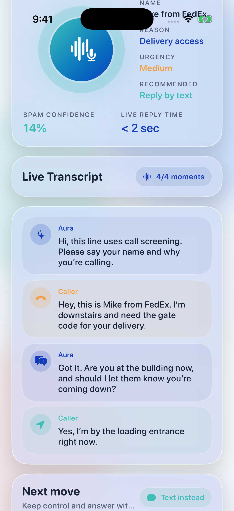
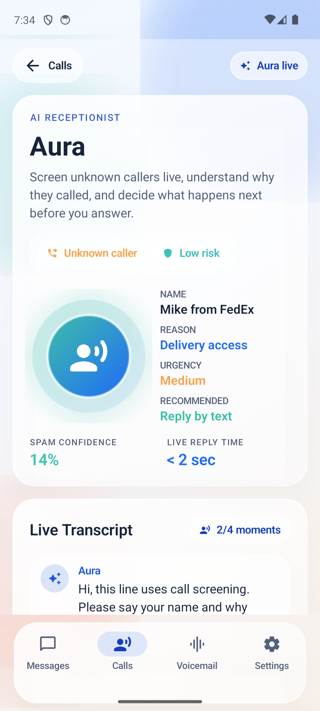

FreeLine Aura / AI Receptionist
Let your number answer first.
Aura is a live AI receptionist for unknown inbound calls. It screens callers in real time, explains why they are calling, scores risk, and lets you take over, text back, ask one more question, or send the caller to voicemail before you answer.
Aura live
Unknown caller
Low risk
Name
Mike from FedEx
Reason
Delivery access
Urgency
Medium
Recommended
Reply by text
Live transcript
Aura
Hi, this line uses call screening. Please say your name and why you are calling.
Caller
This is Mike from FedEx. I am downstairs and need the gate code for your delivery.
Aura
Got it. Are you there now, and should I tell them you are coming down?
Next move
Take over
Ask more
Text instead
Voicemail
Aura drafts the follow-up while the caller is still there, so the user can stay in control without jumping into every unknown call.
Native demo
Actual Aura screens from the app
These are fresh local captures from the real FreeLine demo flow using the seeded
aura proof scenario on iOS and Android.


Product value
Why Aura feels like a real feature
The strongest AI products compress uncertainty. Aura turns a cold inbound call into a structured decision interface before the user ever says hello.
Unknown callers
Screen first
Aura intercepts unknown numbers, asks who is calling and why, and buys the user a few seconds of context before the phone starts demanding attention.
Intent extraction
Summarize in real time
The interface turns speech into clear UI: name, reason, urgency, recommendation, and a running transcript that stays readable under pressure.
Action layer
Respond instantly
One tap can take over the call, draft a text, ask Aura to clarify, or move the caller to voicemail without losing the transcript and recap.
User flow
How the interaction unfolds
The best version of this product is tight, fast, and legible. Four steps are enough to create the wow moment.
Incoming call
FreeLine recognizes the caller as unknown and starts Aura screening instead of immediately asking the user to decide blind.
Aura talks first
The caller hears a short greeting asking for their name and reason. The user watches the transcript build in a controlled, premium-feeling surface.
Decision appears
Once Aura has enough confidence, the UI promotes the best next move with clear trust and urgency cues instead of generic AI copy.
Recap stays behind
Whatever the user chooses, the recap can land in Calls or Messages so the interaction becomes part of the actual communication workflow.
Why it matters
Aura is both a demo magnet and a product wedge
This is the kind of AI feature people can understand in ten seconds, remember after one demo, and immediately imagine paying for.
Retention
Useful on day one
The user does not need to train anything. Unknown calls are already painful, so the value proposition is obvious as soon as the feature runs once.
Monetization
Premium-feature shape
Aura can headline a higher tier, a paid add-on, or a limited free-tier teaser because the value is emotional, practical, and easy to gate.
Brand
Makes FreeLine feel futuristic
A free phone number is already useful. A free phone number with an agentic receptionist starts to feel like a new category of communication product.